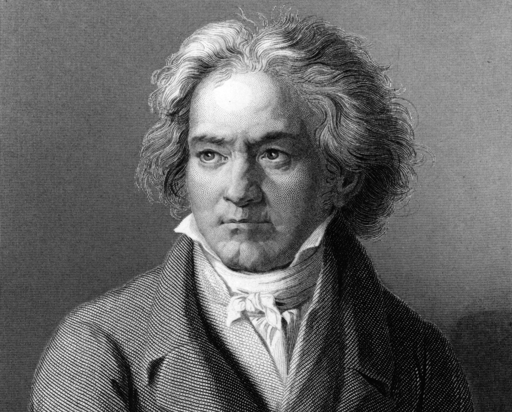

Ludwig van Beethoven (Bonn, batizado em 17 de dezembro de 1770 — Viena, 26 de março de 1827) foi um compositor alemão, do período de transição entre o Classicismo (século XVIII) e o Romantismo (século XIX). É considerado um dos pilares da música ocidental, pelo incontestável desenvolvimento, tanto da linguagem como do conteúdo musical demonstrado nas suas obras, permanecendo como um dos compositores mais respeitados e mais influentes de todos os tempos. "O resumo de sua obra é a liberdade", observou o crítico alemão Paul Bekker (1882-1937), "a liberdade política, a liberdade artística do indivíduo, sua liberdade de escolha, de credo e a liberdade individual em todos os aspectos da vida".
